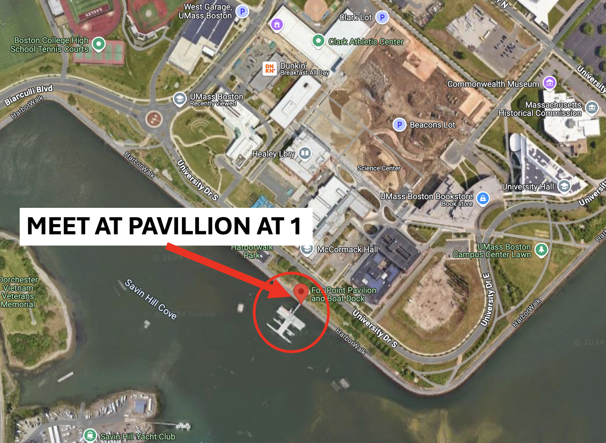

️ Life on the Docks
All of the info below you can find in a handout for lab. Next week, we will meet in our assigned lab classroom to discuss data analysis and writeup. So just have fun this week! Nothing to writeup!
🗺️ When and Where
We will meet for lab not in our assigned space, but out on the Fox Point docks. Please meet at the Pavillion at the space labeled below!

⚓️ Introduction
Floating docks represent a completely novel marine habitat. They are urban marine ecosystems at their most pure. They are full of invertebrate filter feeders – many non-native, algae, a wide variety of small arthropods (amphipods, isopods, etc.), and more. They are, however, a complex ecosystem. Docks are subjected to a number of environmental gradients – such as disturbance by boats, variation in light availability, differences in flow and more. The environmental conditions on a dock determine who can live there and how the community will ultimately function. Today we will explore this habitat and ask questions about what potential gradients in dock community composition we can observe. We will also generate hypotheses as to why and test them with structured sampling scheme.
🧪 Methods
- Lean over the edge and look at what species exist on the sides of the docks. Come up with a classification system based on the lowest taxonomic level you can master of who lives where.
- Spend some time looking at the outer edge and back end of the dock. Look at the different sides of slips. See who lives on each side of a single walkway.
- With your group, come up with a structured plan to sample the docks across some gradient in the environment. Discuss what information you need to record to characterize the differences of communities you observe on docks.
- Record the taxonomic diversity of species and some measure of community composition.
🦑 Species
There’s a lot there! For you use, I’ve created a species ID handout with the most common species you will see.
📒 Taking Data
Depending on your ‘design’ you should come up with a data recording system that looks something akin this (for sampling different plots in sunny and dark areas)
| Plot | Condition | Species | Percent Cover | ||||||
|---|---|---|---|---|---|---|---|---|---|
| 1 | Sunny | Botryllus | 10 | ||||||
| 1 | Sunny | Mussels | 0 | ||||||
| 1 | Sunny | Algae | 80 | ||||||
| 1 | Sunny | Bare | 10 | ||||||
| 2 | Dark | Botryllus | 40 | ||||||
| 2 | Dark | Mussels | 40 |
For Next week please provide an Excel or Google sheets entered version of this file by Tuesday at class time